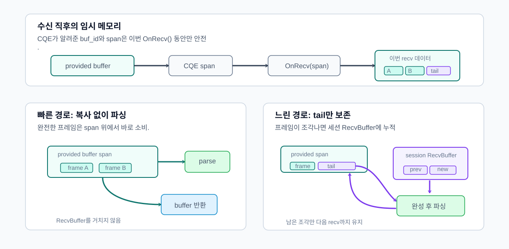
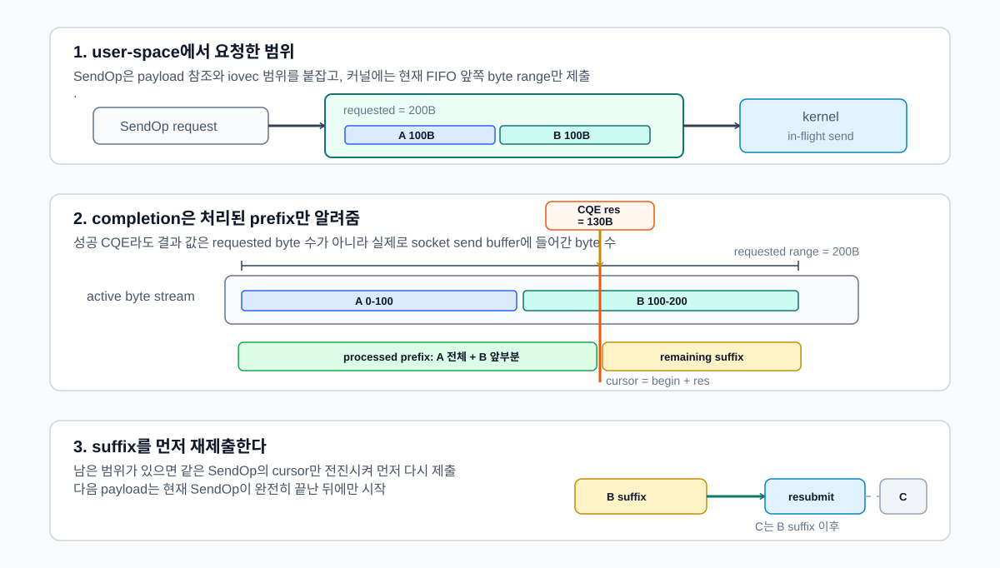
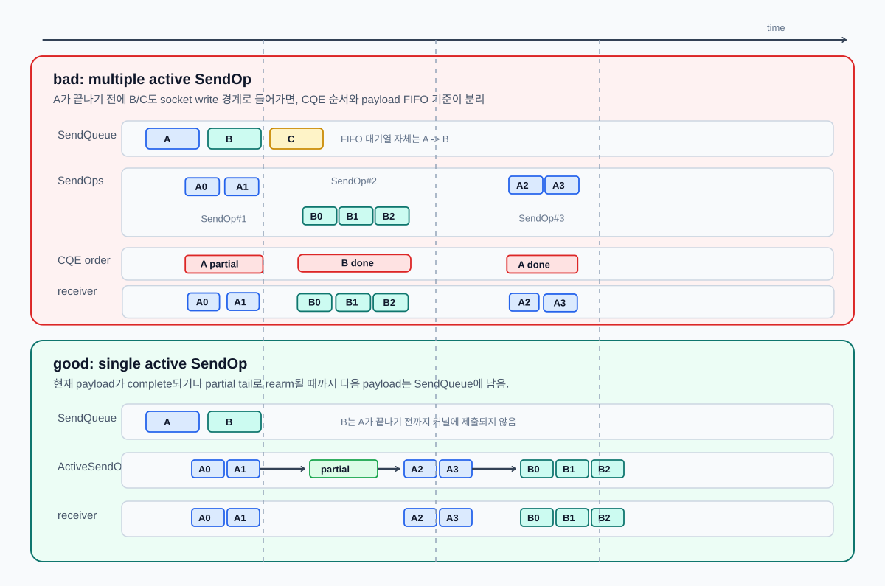
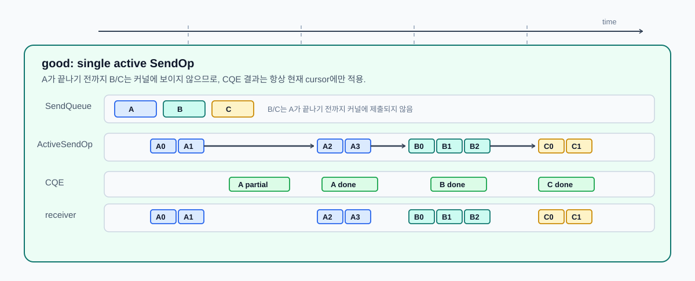

수신 버퍼
1 수신 버퍼
1.1 버퍼 복사와 비용
기존 수신 경로에서는 매 수신마다 임시 버퍼의 데이터를 세션별 수신 버퍼로 복사했습니다. 이 방식은 구현은 단순하지만, 대부분의 패킷이 한 번의 수신으로 완성되는 상황에서도 불필요한 복사 비용이 발생합니다.
그렇다고 커널이 채운 수신 버퍼의 뷰만 그대로 전달할 수도 없습니다. TCP는 바이트 스트림이기 때문에 애플리케이션이 정의한 패킷 경계를 보존하지 않습니다. 하나의 패킷이 여러 번의 수신으로 나뉘어 도착할 수 있고, 반대로 여러 패킷이 한 번의 수신에 합쳐져 들어올 수도 있습니다.
따라서 수신 버퍼는 단순히 “이번에 받은 데이터”를 담는 공간이 아니라, 다음 역할을 수행할 수 있어야 합니다.
| 역할 | 의미 |
|---|---|
| 완전한 프레임 파싱 | 이번 수신 데이터 안에서 완성된 패킷을 바로 해석 |
| 조각난 프레임 보존 | 아직 완성되지 않은 패킷의 앞부분을 다음 수신까지 보관 |
| 소비한 데이터 제거 | 이미 파싱한 앞부분을 버리고 남은 데이터만 유지 |
| 경계 누적 | 다음 패킷 경계가 완성될 때까지 데이터를 이어 붙임 |
1.2 수신 경로 분리
수신 경로는 빠른 경로와 느린 경로로 분리했습니다.
완전한 프레임이 이번 수신 데이터 안에 모두 들어 있는 경우에는 제공 버퍼의 뷰를 그대로 사용해 파싱합니다. 이때 별도의 세션 수신 버퍼로 복사하지 않습니다. 반대로 프레임이 조각나 있거나, 이전 수신에서 남은 조각과 이어 붙여야 하는 경우에만 프로토콜 RecvBuffer에 복사해 누적합니다.

| 상황 | 처리 |
|---|---|
| 완전한 프레임 | provided 버퍼의 span 또는 뷰에서 직접 파싱 |
| 여러 완전한 프레임 | provided 버퍼 뷰를 순차적으로 소비하며 반복 파싱 |
| 조각난 프레임 | 세션 소유 RecvBuffer에 복사해 다음 수신까지 보존 |
| 이전 조각 + 새 데이터 | RecvBuffer에 이어 붙인 뒤 완성 여부 확인 |
이 구조에서 Session은 수신 작업의 상태와 제공 버퍼의 반환 타이밍을 관리합니다. 원본 수신 메모리는 iouring 가 관리하고, 프로토콜 프레임 재조립은 RecvBuffer가 담당합니다.
여러 클라이언트가 동시에 연결되어도 이 경계는 세션별로 독립적입니다. IoRing과 provided buffer pool은 공유되지만, 조각난 프레임을 보관하는 RecvBuffer, 아직 커널에 제출되지 않은 SendQueue, 현재 진행 중인 SendOp은 각 Session 내부 상태로 분리됩니다.
2 송신 버퍼
2.1 요청한 길이와 실제 처리된 길이의 불일치
송신 경로에서는 애플리케이션이 넘긴 페이로드의 수명이 송신 완료까지 보장되어야 합니다. 스택 버퍼, 임시 문자열, 임시 string_view를 그대로 커널 송신 요청에 넘기면, 커널이 아직 해당 메모리를 참조하고 있는 동안 원본 데이터가 먼저 해제되거나 덮어써질 수 있습니다.
또한 송신 완료 통지는 “요청한 버퍼 전체가 전송되었다”는 뜻이 아닙니다. sendmsg나 io_uring send는 성공 완료에서도 요청한 바이트 수보다 작은 값을 반환할 수 있습니다. 이 경우 반환된 값은 실제로 처리된 바이트 수이며, 애플리케이션은 그 바이트 수만큼 현재 페이로드의 송신 커서를 전진시켜야 합니다.

남은 바이트 범위를 기억하지 못하면 두 가지 문제가 생깁니다.
| 문제 | 설명 |
|---|---|
| 데이터 누락 | 부분 완료된 뒤 남은 바이트를 다시 보내지 않으면 페이로드 뒷부분이 사라짐 |
| 순서 훼손 | 앞 페이로드가 끝나기 전에 다음 페이로드를 보내면 애플리케이션이 의도한 메시지 순서가 깨짐 |
따라서 송신 버퍼는 페이로드 수명, 송신 커서, 부분 완료 이후의 재제출 순서를 함께 관리해야 합니다.
2.2 애플리케이션이 의도한 순서 보장 불가
TCP는 네트워크상에서 바이트의 순서를 보존하지만, 애플리케이션이 호출한 Send(A), Send(B) 같은 요청 단위나 프로토콜 메시지 경계를 보존하지 않습니다. TCP가 보장하는 것은 소켓 송신 버퍼에 들어간 바이트의 순서이지, 애플리케이션이 의도한 “A 전체가 끝난 뒤 B 전체”라는 의미적 순서가 아닙니다.
따라서 같은 세션 소켓에 대해 둘 이상의 송신 작업을 동시에 커널에 제출하면, 부분 전송이 발생했을 때 애플리케이션이 의도한 순서가 깨질 수 있습니다.
예를 들어 A를 먼저 보내고 B를 그 다음 보냈더라도, A 송신이 일부 바이트만 성공한 상태에서 이미 제출된 B 송신이 처리될 수 있습니다. 이 경우 TCP 스트림에는 다음과 같은 순서로 바이트가 들어갈 수 있습니다.
A의 앞부분 + B 전체 + A의 뒷부분TCP는 이 순서를 잘못된 것으로 보지 않습니다. 실제로 소켓 송신 버퍼에 들어간 순서가 그렇기 때문입니다. TCP는 이 바이트열을 다시 A 전체 + B 전체로 복구해주지 않으며, 애플리케이션 프로토콜의 메시지 경계도 알지 못합니다.
따라서 애플리케이션이 의도한 송신 순서는 Session의 송신 큐가 직접 보장해야 합니다.

2.3 세션당 단일 활성 송신 작업

송신 경로는 세션별 큐와 활성 송신 작업 하나로 구성됩니다. 이를 통해 아직 커널에 제출되지 않은 데이터와, 이미 커널에 제출되어 완료를 기다리는 데이터를 분리합니다.
| 구성 요소 | 책임 |
|---|---|
SendQueue |
아직 커널에 제출되지 않은 SendBufferRef 대기열과 등록 필요 여부 관리 |
SendOp |
진행 중인 msghdr, iovec, 페이로드 참조, 송신 커서 유지 |
active_send_ev_ |
현재 세션에서 커널에 맡긴 단 하나의 활성 송신 작업 |
소유자 실행 문맥에 들어온 Send()는 페이로드를 send_queue_에 FIFO로 추가합니다. SendQueue::Push()는 첫 추가 주기에서만 needs_register를 반환하고, RegisterSend()는 이미 active_send_ev_가 있으면 즉시 반환합니다. 따라서 현재 송신 작업이 진행 중일 때 새 페이로드가 들어와도, 그 페이로드는 큐에 남아 있을 뿐 커널에는 제출되지 않습니다.
이 구조에서 커널이 알고 있는 현재 세션의 송신 작업은 항상 논리적 FIFO의 맨 앞 조각 하나뿐입니다. 그 앞쪽 조각이 완전히 처리되기 전에는 다음 큐 항목이 커널에 보이지 않습니다.
sendmsg의 iovec은 하나의 바이트 스트림 앞부분으로 해석되고, CQE의 결과 바이트 수는 그 앞부분에서 몇 바이트가 처리되었는지를 의미합니다. 따라서 짧은 쓰기가 발생하더라도 완료된 바이트 수만큼 현재 SendOp의 커서를 전진시키면 남은 뒷부분을 정확히 계산할 수 있습니다.
부분 완료가 발생하면 큐를 재구성하지 않습니다. 현재 SendOp의 커서만 전진시키고, 같은 페이로드의 남은 범위를 다시 제출합니다. 현재 SendOp이 완전히 끝나기 전까지는 다음 페이로드를 큐에서 꺼내지 않습니다.
즉 송신 경로에서 항상 성립해야 하는 조건은 다음과 같습니다.
- 세션당 활성 송신 작업은 0개 또는 1개
- 같은 세션 소켓에 동시에 둘 이상의
send를 제출하지 않음
- 같은 세션 소켓에 동시에 둘 이상의
- 활성
SendOp은 논리적 FIFO의 맨 앞 항목- 뒤의 페이로드가 앞의 페이로드를 추월할 수 없음.
- CQE의 성공 결과는 커서 전진으로 처리
- 요청한 길이가 아니라 실제 처리된 바이트 수를 기준으로 진행.
- 현재
SendOp완료 후 다음 항목으로 이동- 부분 전송된 페이로드의 남은 범위를 먼저 처리.
결과적으로 수신과 송신은 모두 “메모리 범위가 언제까지 유효한가”를 기준으로 설계됩니다. 수신은 한 번에 완성된 패킷이면 제공 버퍼 뷰를 바로 해석해 불필요한 복사를 피하고, 조각난 프레임이나 합쳐진 패킷은 RecvBuffer가 세션별로 보존합니다. 송신은 커널 완료 전까지 SendBufferRef와 SendOp이 원본 바이트를 붙잡고, CQE의 실제 처리 바이트 수만큼 커서를 전진시켜 남은 범위를 재제출합니다.